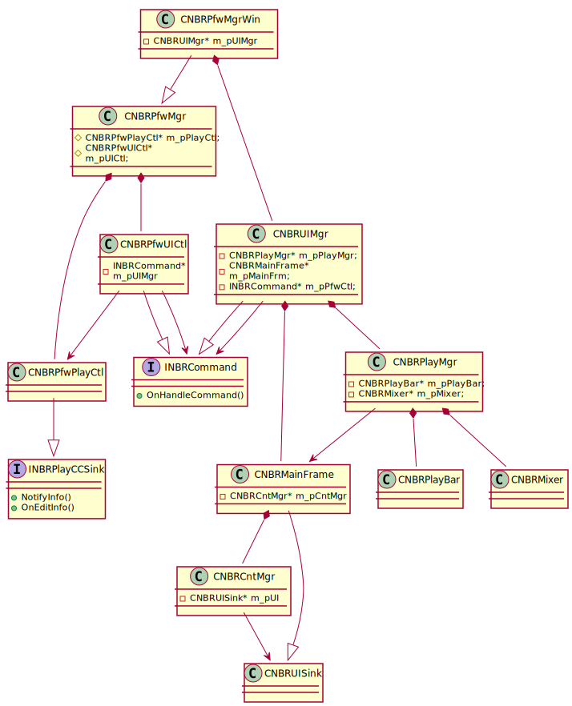
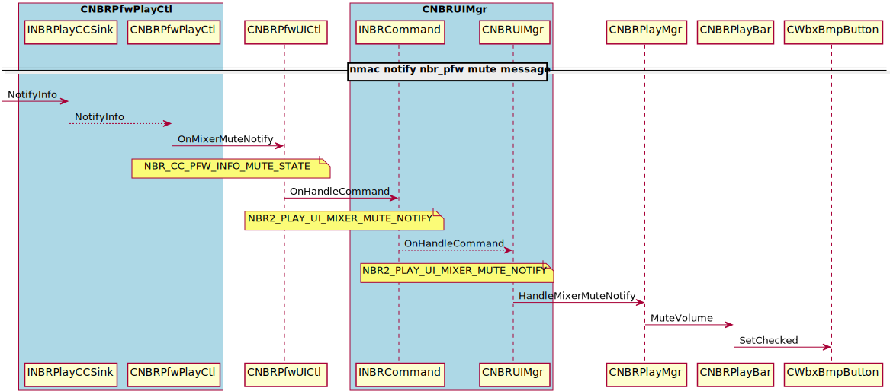
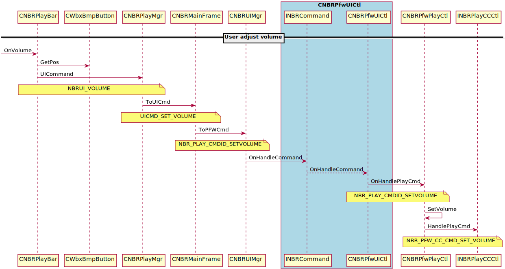

NBR Player Issue¶
What’s the problem¶
- CSCve14122: NBRplayer crash sometimes when plugout then plugin USB audio device
How to reproduce¶
- Open NBR player first, then plug in a USB device, set to default device in system, open an arf file to play, plug out/in USB device, it doesn’t crash.
- Open NBR player, open an arf file to play, plug in a USB device, plug out/in device, it doesn’t crash.
- Plug in a USB device, set to default device, open nbr player, open an arf file to play, plug out/in usb device, it will crash after 2-3 operations.
What’s the root cause¶
- Disabled create m_pMixer, then built NBR pfw ‘s, It doesn’t crash any more.
- Reviewed the mixer code, find it will create volume control on default device(wave id 0),
- So in this case, when default change, it doesn’t release it, then it may cause system has problem on reference.
What’s the solution¶
- Nmac.dll export API to nbr player, NBR player call Nmac’s export API to control volume
What’s the new problem will be introduced¶
- In some case, NBR player can’t adjust volume
- If NBR Player don’t load nmac.dll, and ARF file include SVS
- If NBR Player don’t load nmac.dll, and ARF file has PD session which include audio
- The work around solution
- The customer can adjust volume through system Mixer
Know issue¶
- An ARF file include SVS and VOIP
- Plug in and Plug out
- SVS audio will be no voice
What’s case nmac.dll will be loaded¶
- ARF file include “APPSVR_PROTOCOLTYPE_TELEPHONY 5” session
- ARF file include “APPSVR_PROTOCOLTYPE_MM_AUDIO 20” session
Code change¶
- cctgfork/webex-client-common
- nbr_pfw_cc.h
- const WBXUInt32 NBR_PFW_CC_CMD_SET_VOLUME = 8UL; //0–65535
- const WBXUInt32 NBR_PFW_CC_CMD_MIXER_UI_READY = 9UL; //0-UI not ready, 1- UI is ready
- const WBXUInt32 NBR_CC_PFW_INFO_MUTE_STATE = 18UL; //0-unmute, 1-mute
- const WBXUInt32 NBR_CC_PFW_INFO_VOLUME_VALUE = 19UL; //0-65535
- nbr/h/nbr_cmd_base.h
- const WBXUInt32 NBR2_PLAY_UI_MIXER_MUTE_NOTIFY = NBR_UI_PLAY_CMDTYPE_BASE + 23UL;
- const WBXUInt32 NBR2_PLAY_UI_MIXER_VOLUME_NOTIFY = NBR_UI_PLAY_CMDTYPE_BASE + 24UL;
- cctgfork/webex-player
- common/pfw
- pfw_play_ctl.cpp
- pfw_play_ctl.h
- pfw_ui_ctl.cpp
- pfw_ui_ctl.h
- windows/pfw_ui
- nbr_mainfrm.cpp
- nbr_mainfrm.h
- nbr_pfw.rc
- nbr_pfw.vcxproj
- nbr_playbar.cpp
- nbr_playbar.h
- nbr_playmgr.cpp
- nbr_playmgr.h
- nbr_ui_mgr.cpp
- nbr_uidef.h
- nbr_uiframe.cpp
- nbr_uiframe.h
Class Diagram¶
Sequence Diagram¶
click UI mute

nmac notify nbr_player mute message
click UI to adjust volume
nmac notify nbr_player volume message
Client log keywords¶
- [UTIL] INFO: [NBR AUDIO] CAudioCtrl::HandlePlayCmd NBR_PFW_CC_CMD_SET_VOLUME
- [UTIL] INFO: [NBR AUDIO] CAudioCtrl::HandlePlayCmd NBR_PFW_CC_CMD_MUTE
- [UTIL] INFO: [NBR AUDIO] CAudioCtrl:HandleCtlInfo, NBR_PFW_CC_INFO_GETMUTE, currentValue = 1
- [UTIL] INFO: [NBR AUDIO] CAudioCtrl:HandleCtlInfo, NBR_PFW_CC_INFO_GETVOLUME, currentValue = 39609
Test case¶
- Plugin/Plugout USB audio device
- [Precondition]
- There are 2 audio devices on win7: USB device(jabra / logitech), Realtek High Definition Audio.
- Set USB device as default device.
- [Steps]
- Step 1, Start to playback recording which format is .ARF .
- Step 2, Plug out USB audio device.
- Step 3, Plug in USB audio device.
- [Expected Result]
- In step 1, NBR audio will playback through USB device.
- In step 2, after plug out USB device, NBR audio will playback through Realtek High Definition Audio device.
- In step 3, after plug in USB device, NBR audio will playback through USB device.
- Test NBR Player mute button is workable or not
- [Precondition]
- Prepare an ARF file which have voice
- [Steps]
- Step 1, Open the ARF file and click play
- Step 2, Click Mute button to mute
- Step 3, Click Mute button to unmute
- [Expected Result]
- In Step 1, can hear voice
- In Step 2, NBR Player UI change to muted Icon, can’t hear voice and the system Mixer speaker muted too
- In Step 3, NBR Player UI change to unmute Icon, can hear voice and the system Mixer speaker unmute too
- Mute/Unmute system mixer speaker
- [Precondition]
- Prepare an ARF file which have voice
- [Steps]
- Step 1, Open the ARF file and click play
- Step 2, mute system Mixer speaker
- Step 3, unmute system Mixer speaker
- [Expected Result]
- In Step 1, can hear voice
- In Step 2, NBR Player UI change to muted Icon, can’t hear voice
- In Step 3, NBR Player UI change to unmute Icon, can hear voice
- Test NBR Player volume bar is workable or not
- [Precondition]
- Prepare an ARF file which have voice
- [Steps]
- Step 1, Open the ARF file and click play
- Step 2, Click the volume bar the change the volume
- [Expected Result]
- In Step 1, can hear voice
- In Step 2, NBR Player UI volume size will change, observe the volume and the system Mixer speaker volume
- Adjust system Mixer speaker volume
- [Precondition]
- Prepare an ARF file which have voice
- [Steps]
- Step 1, Open the ARF file and click play
- Step 2, Adjust system mixer volume speaker volume
- [Expected Result]
- In Step 1, can hear voice
- In Step 2, NBR Player UI volume size will change
- Play an ARF file which is without any audio relevant session
- [Precondition]
- Prepare an ARF file without any audio relevant session
- [Steps]
- Step 1, Open the ARF file and click play
- [Expected Result]
- In Step 1, can’t hear voice
- In Step 1, NBR Player UI: mute button and volume bar was disabled
APPSVR_PROTOCOLTYPE_TELEPHONY = 5
APPSVR_PROTOCOLTYPE_DOCUMENT_SHARING = 6
APPSVR_PROTOCOLTYPE_FILE_SHARING = 10
- APPSVR_PROTOCOLTYPE_MM_AUDIO = 20
- [Precondition]
- [Steps]
- [Expected Result]
APPSVR_PROTOCOLTYPE_STREAM_VIDEO = 51
NBR Player APPSVR_PROTOCOLTYPE & Component Map¶
| Protocol Type | Index | Component | Comments |
|---|---|---|---|
| APPSVR_PROTOCOLTYPE_CHAT 1 | CHATINDEX 0 | nbrchat.dll | chat |
| APPSVR_PROTOCOLTYPE_WEBTOUR 3 | QAINDEX 1 | nbrqa.dll | qa |
| APPSVR_PROTOCOLTYPE_MM_VIDEO 21 | VIDEOINDEX 2 | nmvc.dll | video |
| APPSVR_PROTOCOLTYPE_NOTETAKER 16 | NOTEINDEX 3 | nbrnote.dll | notes |
| APPSVR_PROTOCOLTYPE_INTERACTIVE_FORM 8 | POLLINDEX 4 | nbrpoll.dll | polling |
| APPSVR_PROTOCOLTYPE_FILE_SHARING 10 | FILEINDEX 5 | nbrft.dll | file t |
| APPSVR_PROTOCOLTYPE_APPLICATION_SHARING 4 | ASINDEX 9 | nbras.dll | as |
| APPSVR_PROTOCOLTYPE_DOCUMENT_SHARING 6 | PDINDEX 8 | nbrpd.dll | pd |
| APPSVR_PROTOCOLTYPE_TELEPHONY 5 | VOIPINDEX 10 | nmac.dll | voip |
| APPSVR_PROTOCOLTYPE_MM_AUDIO 20 | VOIPINDEX 10 | nmac.dll | voip |
| APPSVR_PROTOCOLTYPE_STREAM_VIDEO 51 | STREAMINDEX 11 | nmfs.dll | SVS |